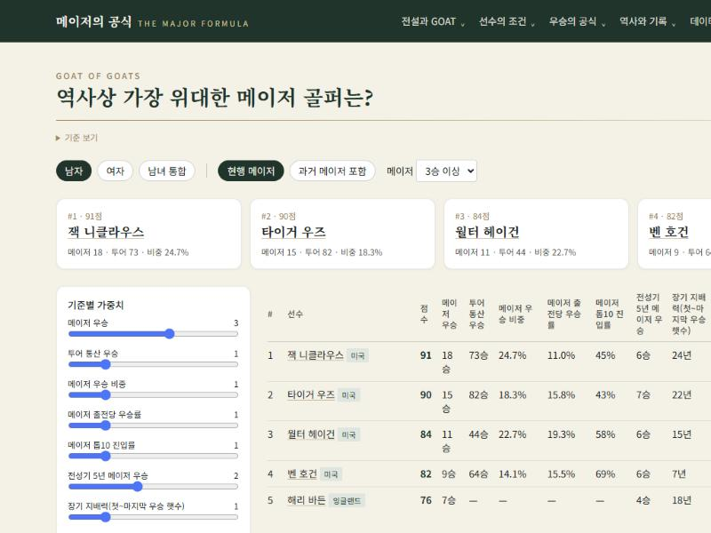
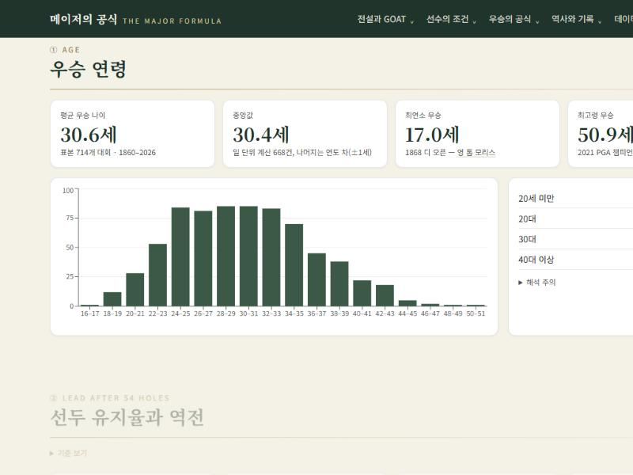

이런 서비스입니다
마스터스, PGA 챔피언십, US오픈, 디 오픈 같은 남녀 프로골프 메이저대회의 역대 우승 기록을 대회 단위로 모았습니다. 우승자가 몇 살이었는지, 54홀을 선두로 마친 선수가 끝까지 지켰는지, 어느 나라가 가장 많이 우승했는지를 직접 조건을 바꿔 가며 확인할 수 있습니다.
가중치를 바꿔 나만의 역대 최고 골퍼 순위를 만들고, 메이저에 유난히 강한 선수와 우승자의 신장 분포까지 이어서 살펴봅니다. 각 대회와 코스의 역사 아카이브도 함께 있습니다.
이 서비스의 순위와 비율은 위키백과 기록을 바탕으로 한 자체 계산값이며, 주관 기관의 공식 통계나 공식 GOAT 순위가 아닙니다. 남녀는 따로 계산합니다.
이런 화면이 있습니다
메이저 우승, 투어 통산 우승, 메이저 우승 비중, 출전당 우승률, 톱10 진입률, 전성기 5년 우승, 장기 지배력의 가중치를 슬라이더로 바꾸면 순위도 달라집니다. 남자·여자·남녀 통합과 현행 메이저·과거 메이저 포함을 고르고 메이저 승수 기준으로 걸러 볼 수 있습니다.
우승 나이 분포와 54홀 선두의 유지율·역전 비율을 대회, 기간, 우승 당시 나이 같은 조건으로 좁혀 봅니다. 선두 우승과 역전 우승은 하나의 경기 결과를 나눈 두 비율입니다.
전체 투어 우승 가운데 메이저 우승이 차지하는 비중을 비교합니다. 투어 공식 승수와 메이저 승수의 집계 기준이 맞는 선수만 비교합니다.
역대 메이저 우승자의 신장 분포부터 탐색합니다. 우승자만을 대상으로 한 분석이며, 키가 우승에 유리하다는 뜻은 아닙니다.
대회마다 개최 횟수, 최연소·최고령 우승, 최저 우승 스코어, 국가별 우승과 역대 우승자를 모아 봅니다. 마스터스·PGA 챔피언십·US오픈·디 오픈을 비롯한 12개 대회가 있습니다.
오거스타 내셔널, 세인트앤드루스 올드코스, 페블비치, 시네콕 힐스, 에비앙 리조트 등 코스별로 설계와 특징, 이곳에서 열린 메이저 기록을 소개합니다.
화면 미리보기

가중치를 바꾸면 순위가 달라집니다

우승 연령 분포를 조건별로 살펴봅니다

대회별 역사 아카이브
자료와 계산 원칙
위키백과 기록은 바뀔 수 있어서, 자료를 갱신할 때마다 자동 검증을 거치고 사람이 결과를 확인합니다. 공식 기록과의 대조는 앞으로의 과제입니다.
기술 및 제작 방식
개발 현황
누구나 바로 쓸 수 있습니다. 새 메이저가 끝나면 자료를 갱신하고 검증하며, 자동 수집은 아직 켜지 않았습니다.